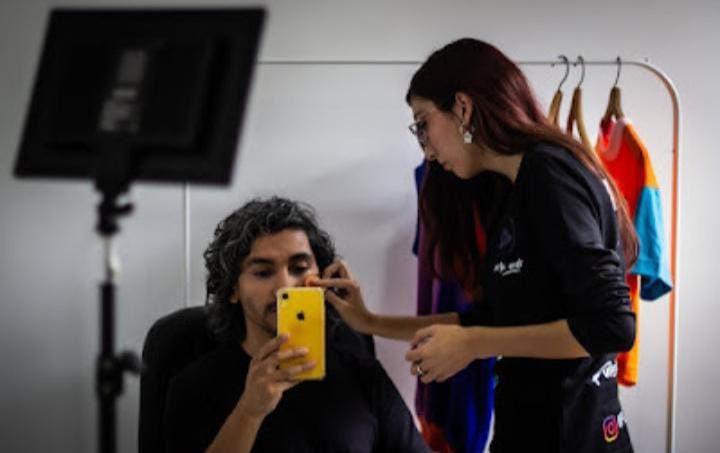
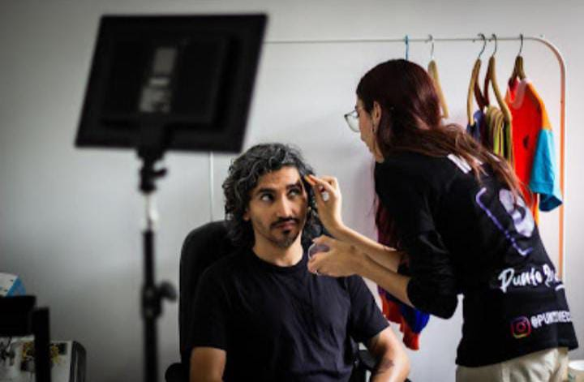
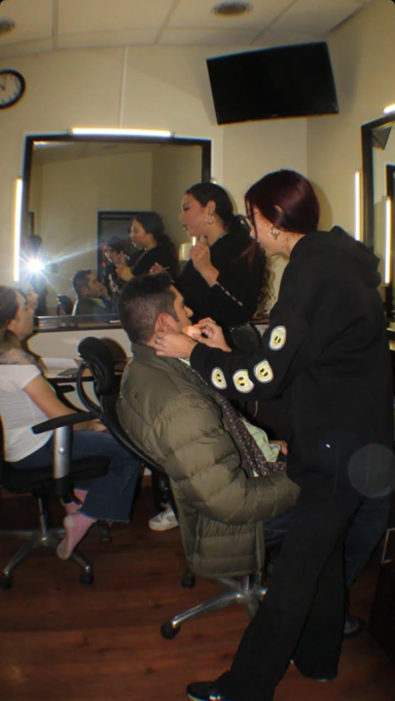

Maquillaje-Audiovisual




El maquillaje audiovisual es una disciplina que combina técnica, creatividad y precisión para realzar la imagen en cine, televisión y producciones digitales. Adaptado a la cámara y la iluminación, este maquillaje busca resaltar rasgos, crear personajes y transmitir emociones que se captan en cada plano. Ya sea para escenas naturales o efectos especiales, el maquillaje audiovisual es clave para contar historias visuales con autenticidad y detalle, logrando que cada imagen cobre vida y conexión con el espectador.